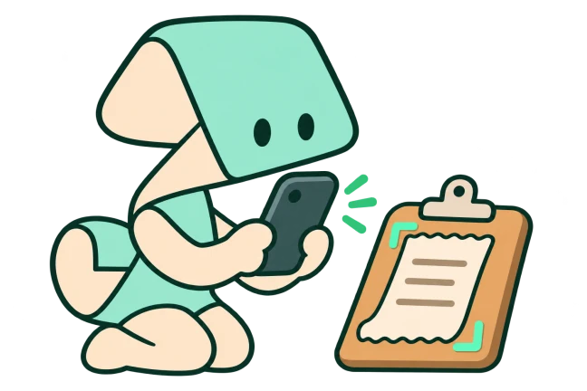
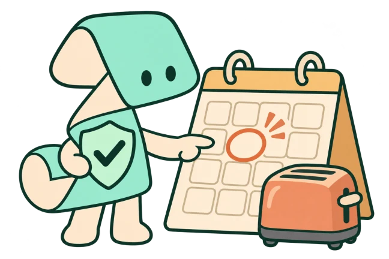

Pindai struk belanja
Foto struk atau ambil dari galeri. Gunakan OCR untuk membantu mengisi data, lalu periksa hasilnya sebelum disimpan.
Foto struk belanja dan catat masa garansi tiap barang. Saat perlu klaim, bukti pembelian mudah ditemukan.


Ambil foto atau pilih dari galeri.
Lihat garansi tiap barang.
Temukan struk penting lebih cepat.
Simpan salinan bukti pembelian.
Ketel rusak dan masih bergaransi? Buka catatan barang untuk melihat masa berlakunya, lalu bagikan PDF struk sebagai bukti pembelian.
Cara mencatat garansiStruk pembelian tersimpan

Foto struk atau ambil dari galeri. Gunakan OCR untuk membantu mengisi data, lalu periksa hasilnya sebelum disimpan.

Catat durasi garansi tiap barang. Lihat mana yang masih aktif, hampir habis, atau sudah berakhir.
Simpan bukti belanja penting sebagai favorit agar mudah ditemukan saat dibutuhkan.
Isi nama toko, tanggal, dan nominal sendiri kapan saja.
Bagikan salinan struk untuk arsip atau pengajuan klaim.
Simpan cadangan di folder pilihanmu dan pulihkan saat dibutuhkan.
Rp0
Rp49.000
Harga normal Rp100.000
Hemat 51%
Bayar sekali, aktif selamanya.
Buka menu Premium di Receipt Keeper. Harga akhir ditampilkan di Google Play sebelum kamu membayar.
Bisa. Kamu bisa mengubah hasil pembacaan sebelum menyimpan struk. Kalau foto sulit terbaca, masukkan datanya secara manual.
Status menunjukkan apakah garansi masih berlaku. Dengan Premium, kamu juga bisa menyalakan notifikasi pengingat untuk barang yang ingin dipantau.
Buat berkas cadangan dari pengaturan dan simpan salinannya di tempat yang bisa diakses dari HP baru. Di Receipt Keeper, pilih berkas tersebut untuk memulihkan arsip.
Premium Lifetime dibayar sekali. Jika memasang ulang aplikasi atau ganti HP, pilih Restore Pembelian menggunakan akun Google Play yang sama.